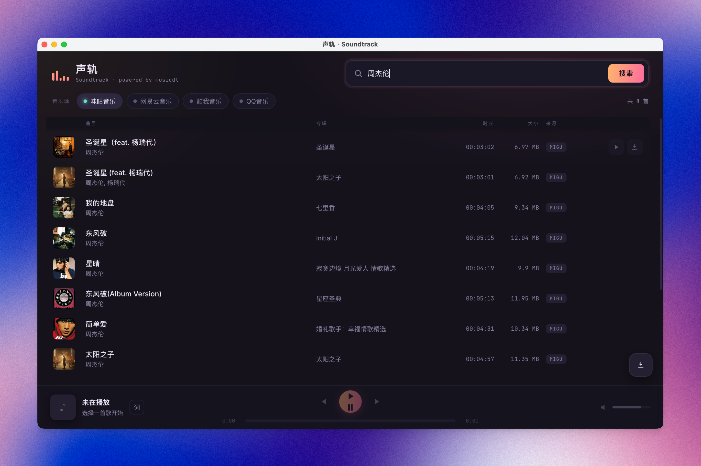

musicdl-soundtrack
声轨 Soundtrack
一个由 musicdl 驱动的桌面音乐客户端。支持咪咕、网易云、酷我、QQ、 酷狗、5sing、Jamendo 与 Spotify，聚合搜索、试听与下载。
Interface / 01
所有操作，都在一条声轨上。

Open source
在 GitHub 查看项目
浏览源代码、安装说明和项目动态。
Desktop releases
下载 Windows / macOS 版本
前往最新 Release，按系统选择 Windows 或 macOS 压缩包。